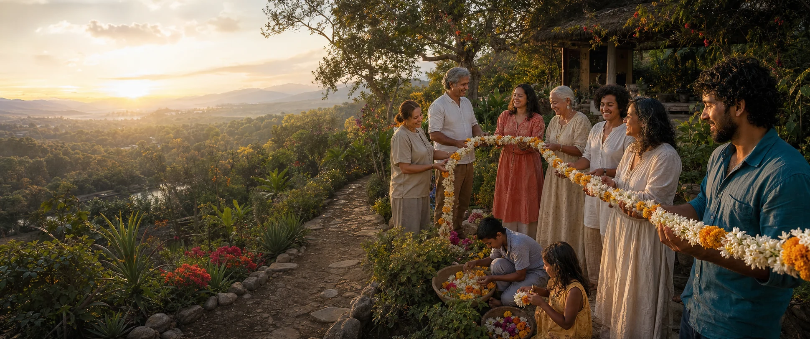

Joyful
Love, sexuality, play, beauty, celebration and curiosity belong in serious thinking about the future.

GAJRA Earth imagines joyful responsible abundance: distinct people, cultures, places and intelligences held in relationship without being made the same.
Concept artwork
A gajra is made through relationship. Each flower remains itself while the thread creates a larger form. Global group marriage brings that image into the household: many adults, many bonds, one consciously tended family.
The U.N. of Love stretches the same principle across culture and future generations. GAJRA Earth carries it out to the planetary scale.
These ideas connect through lived principles rather than one central authority.
Love, sexuality, play, beauty, celebration and curiosity belong in serious thinking about the future.
Children, care, law, resources, power and long consequences remain part of the same picture.
Value includes time, knowledge, affection, culture, creativity, nature and relationship, not only money.
People participate as whole intelligences, with private interiors and real agency inside the shared world.
Global Group Marriages is one public doorway inside a wider ecosystem of law, place, desire, story, music, travel, personal reflection and cognitive architecture.
Love, play, learn, teach.